- 주제: Nuvoton M55M1 기반 사람 검출 프로젝트의 데이터 준비, 학습, 모델 변환, 보드 추론 흐름
- 핵심 모델: YOLOX Nano
- 변환 경로: PyTorch → ONNX → TensorFlow Lite → Vela
- 결과: 테스트 148건 중 136건 검출로 약 92.5% 정확도
| 대목차 | HTML 반영 범위 |
|---|---|
| 사례 소개 | 3~6페이지 프로젝트 요약, 사용 시나리오, 결과 |
| 모델 비교 | 7~10페이지 모델 크기, 훈련 효율, 적용 시나리오 |
| LabelImg | 11~18페이지 라벨링 절차 |
| Anaconda 환경 기반 PC 학습 | 19~31페이지 개발 환경, 학습, ONNX, Vela |
| 개발보드 추론 시스템 흐름 | 32~46페이지 보드 추론 흐름과 함수 설명 |
| DEMO 영상 | 47페이지 링크 |
- 프로젝트 요약
- 요구사항 및 사용 시나리오 예시
- 사례 결과
이 프로젝트는 기계 학습 기술을 이용해 Nuvoton M55M1 임베디드 플랫폼에서 사람 검출을 구현할 수 있는지와 그 응용 가능성을 검토하는 것을 목표로 합니다.
사람 검출은 보안, 스마트 빌딩, 산업 자동화 분야에서 점점 중요한 응용 시나리오가 되고 있으며, M55M1은 고성능 처리 능력과 저전력 특성 때문에 IoT 및 스마트 장치에 적합한 보드로 소개됩니다.
- 공장, 공사 현장 같은 위험 구역에서 사람이 특정 영역에 들어오거나 나가는 상황을 감시해야 합니다.
- 산업 생산 라인 사이의 출입 금지 구역에 검출 장비를 설치해 사람이 진입했는지를 감시하는 사례를 제시합니다.
사진 출처: Freepik source
박스로 표시된 부분은 사람 출현 위치이며, 사람 검출 시스템은 임베디드 플랫폼에서 92.5%의 정확도(136/148)를 달성한 것으로 정리됩니다.
또한 모델에 양자화와 경량화를 적용해 자원이 제한된 환경에서도 효율적으로 동작하도록 했다고 적고 있습니다.
- TinyML 훈련: PC에서 경량 모델을 학습합니다.
- 경량화 모델 및 변환: ONNX와 TensorFlow Lite 포맷으로 변환합니다.
- 모델 Vela 컴파일 및 설정: Arm microNPU용 최적화를 수행합니다.
- 개발보드 배포: 모델과 코드를 보드 프로젝트에 통합합니다.
- C 언어 프로그램 작성: 결과 표시와 후처리 코드를 구성합니다.
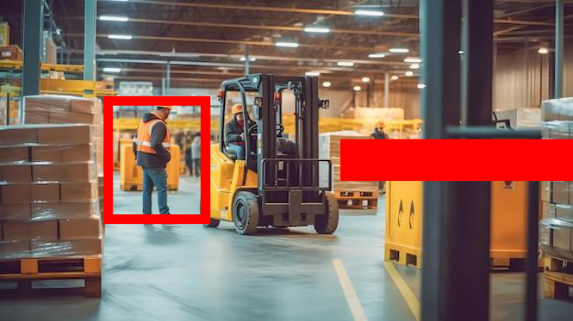
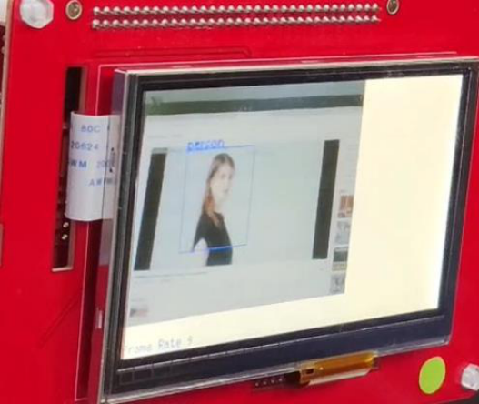
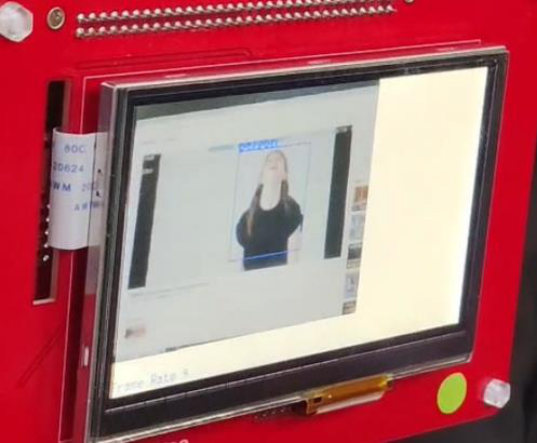
- 모델 크기와 추론 속도
- 훈련 효율
- 적용 시나리오
| 구분 | 내용 |
|---|---|
| YOLOX Nano | 본 프로젝트 사용 모델. 파라미터 수는 약 0.91M이며, 저연산 장치에 맞춰 최적화되어 스마트 카메라와 드론 같은 실시간 응용에 적합하다고 설명합니다. |
| 추론 속도 | Nuvoton M55M1 같은 엣지 플랫폼에서 매우 빠른 추론 속도를 보인다고 정리합니다. |
| 기타 YOLO 모델 | YOLOv4 / YOLOv5는 고성능 GPU용 계열이며, 표준 YOLOX-S / YOLOX-M 등은 더 높은 정확도를 목표로 하지만 모델이 커질수록 추론 속도가 느려진다고 비교합니다. |
- YOLOX Nano는 Anchor-free 구조를 사용하므로 anchor 의존성이 줄어들고 초기 매개변수 조정이 단순합니다.
- 새 데이터셋에 적응시키기 쉬운 점이 장점입니다.
- YOLOv4 / YOLOv5는 Anchor-based 방식이라 라벨 형식과 anchor 설정에 더 많은 조정이 필요합니다.
- 표준 YOLOX도 Anchor-free 흐름은 같지만 더 높은 연산 자원을 요구합니다.
- YOLOX Nano: 스마트 홈 도어락, 사람 감지, 모바일 앱 객체 검출, 산업용 소형 카메라 같은 실시간 엣지 시나리오
- YOLOv4 / YOLOv5: 서버나 고성능 GPU에서 대규모 영상 분석 또는 실시간 비디오 스트림 분석
- 표준 YOLOX: 자율주행 센싱, 상업용 감시 시스템 같은 전문 응용
LabelImg로 이미지 1000장의 박스를 표시하고, 생성한 COCO 파일을 Annotations 폴더에 저장해 이후 모델 학습에 사용합니다.
- LabelImg 실행 창을 확인합니다.
- Open으로 이미지를 불러옵니다.
- 우클릭 후 Create RectBox를 선택합니다.
- 검출하고 싶은 사람 영역을 박스로 감쌉니다.
- 객체 이름을 입력합니다.
- 같은 라벨이 반복되면 기존 이름 목록에서 바로 선택할 수 있습니다.
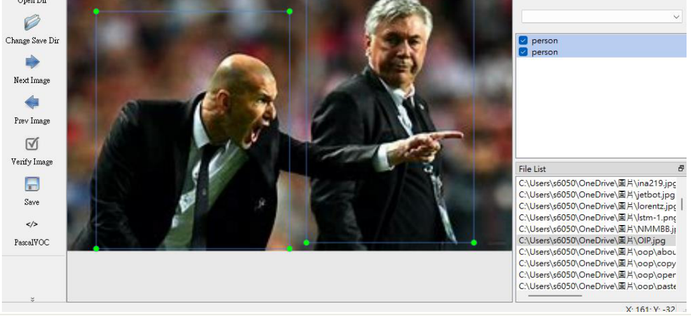
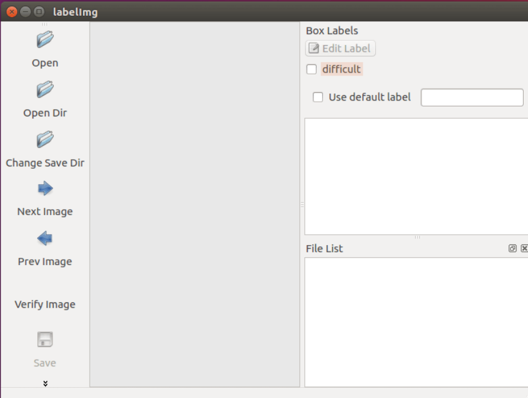
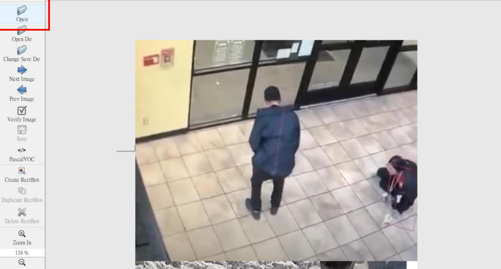
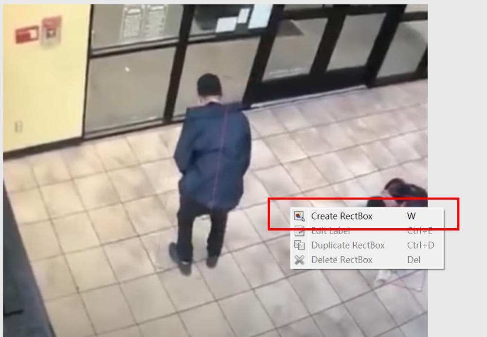
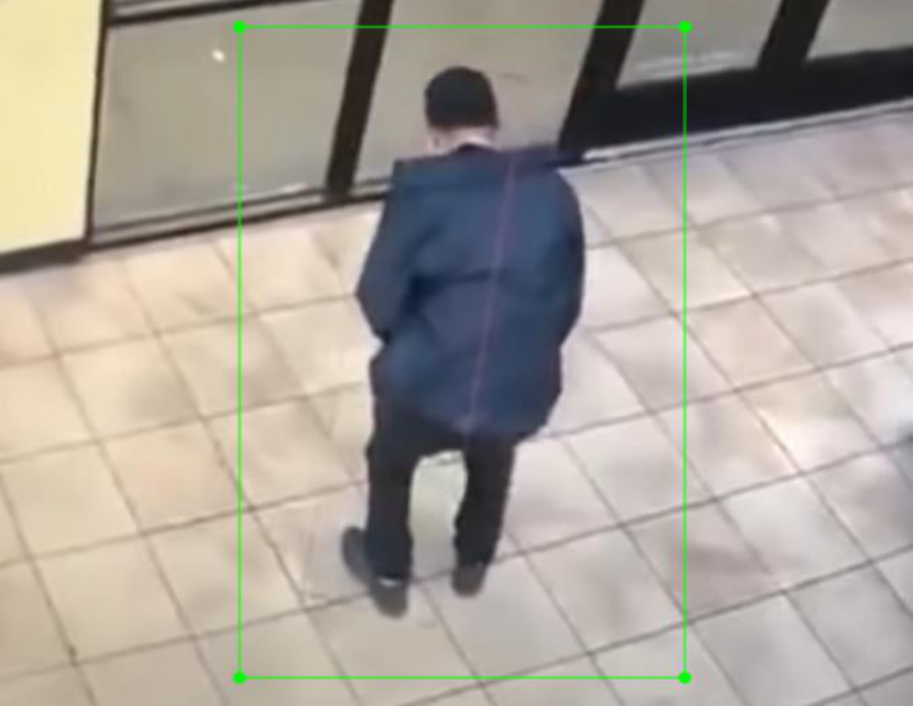
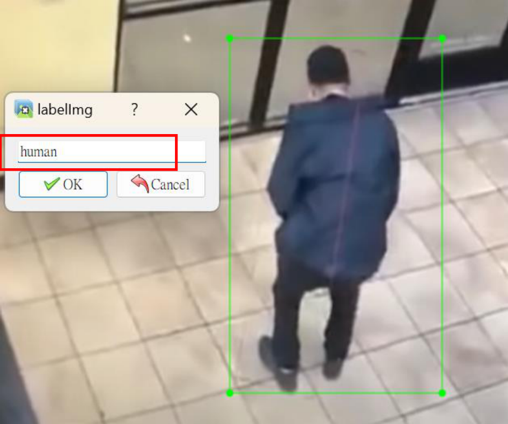
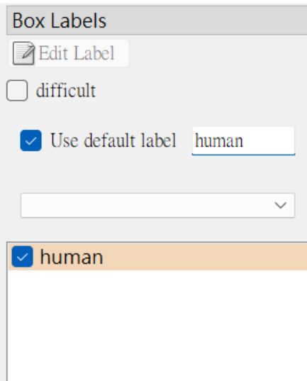
- 본 프로젝트의 하드웨어 및 모델 사양
- 데이터셋 준비
- Anaconda 환경 구축
- YOLOX Nano 모델 학습
- ONNX 변환
- Vela 컴파일러
| 항목 | 값 |
|---|---|
| GPU | RTX 3060 Ti |
| CUDA | 11.8 |
| PyTorch | 2.0.0 |
| 학습 파라미터 | EPOCH 200, BATCH SIZE 64 |
| 학습 시간 | 약 1.5시간 |
- 데이터 준비 단계는 LabelImg, Kaggle, 경량 모델 선택으로 구성됩니다.
- 훈련 프레임워크는 PyTorch, 모델은 Yolox-nano, 라벨링 도구는 LabelImg, 포맷은 COCO JSON입니다.
- 데이터 수량은 Train 343, Valid 148입니다.
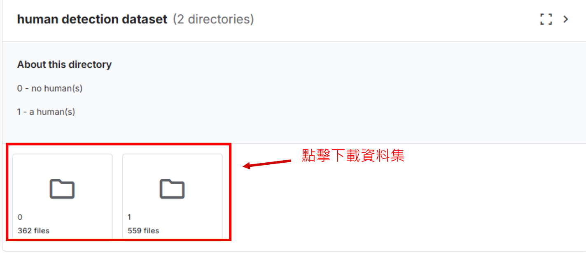
Python 환경 생성, pip 업그레이드, CUDA 11.8용 PyTorch 설치, MMCV 2.0.1 설치, 추가 요구 패키지 설치, 마지막으로 YOLOX 개발 모드 설치 순서로 진행합니다.
conda create --name yolox_nu python=3.10 conda activate yolox_nu python -m pip install --upgrade pip setuptools python -m pip install torch torchvision torchaudio --index-url https://download.pytorch.org/whl/cu118 python -m pip install mmcv==2.0.1 -f https://download.openmmlab.com/mmcv/dist/cu118/torch2.0/index.html python -m pip install --no-input -r requirements.txt python setup.py develop
사전학습 모델을 사용해 학습을 시작하고, exps/default/yolox_nano_ti_lite_nu.py 설정 파일에서 데이터셋 경로, 클래스 수, epoch를 자신의 데이터에 맞게 수정합니다.
- 데이터셋 디렉터리 구조를 학습 스크립트가 기대하는 형태로 맞춥니다.
- class 수와 epoch=200 설정을 학습 조건에 맞게 지정합니다.
Datasets/<your_datasets_name>/
annotations/
train_annotation_json_file
val_annotation_json_file
train2017/
train_img
val2017/
validation_img
python tools/train.py -f <MODEL_CONFIG_FILE> -d 1 -b <BATCH_SIZE> --fp16 -o -c <PRETRAIN_MODEL_PATH>- ONNX는 프레임워크 간 모델 이식을 위한 중간 포맷입니다.
- TensorFlow Lite는 양자화와 하드웨어 가속을 통해 임베디드 추론 속도와 효율을 높입니다.
- 절차는 PyTorch → ONNX → calibration data 생성 → ONNX to TFLite입니다.
- Vela는 Arm microNPU용 컴파일러이며, TFLite 모델 최적화, NPU 연산 배치, 메모리 접근 및 명령 스트림 최적화를 수행한다고 설명합니다.
- variables.bat 수정과 gen_modle_cpp 실행 후 결과 파일은 vela\generated\yolox_nano_ti_lite_nu_full_integer_quant_vela.tflite.cc에 생성됩니다.
python tools/export_onnx.py -f <MODEL_CONFIG_FILE> -c <TRAINED_PYTORCH_MODEL> --output-name <ONNX_MODEL_PATH> python demo/TFLite/generate_calib_data.py --img-size <IMG_SIZE> --n-img <NUMBER_IMG_FOR_CALI> -o <CALI_DATA_NPY_FILE> --img-dir <PATH_OF_TRAIN_IMAGE_DIR> onnx2tf -i <ONNX_MODEL_PATH> -oiqt -qcind images <CALI_DATA_NPY_FILE> [[[[0,0,0]]]] [[[[1,1,1]]]]
set MODEL_SRC_FILE=<your tflite model> set MODEL_OPTIMISE_FILE=<output vela model> gen_modle_cpp
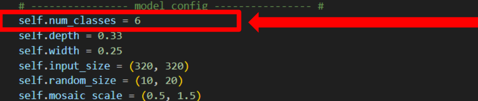
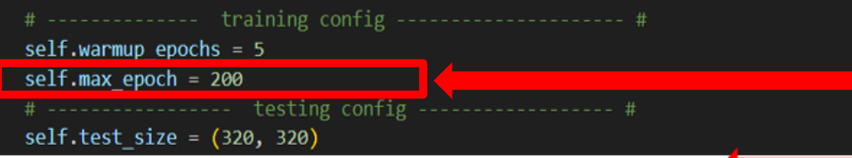
- System Initialization: 시스템 초기화
- Capture Image: 이미지 캡처
- Inference: 추론
- Post-Processing & Draw Results: 후처리 및 결과 그리기
- Display Results: 결과 표시
- BoardInit() 함수는 하드웨어 관련 초기화를 담당합니다.
- 기본 하드웨어 자원을 준비해 두어야 이후 영상 처리와 신경망 추론 모듈이 안정적인 클록과 통신 환경에서 동작할 수 있다고 설명합니다.
- 메인 프로그램 CLK 초기화와 개발보드 주변 하드웨어 초기화를 별도 코드 화면으로 제시합니다.
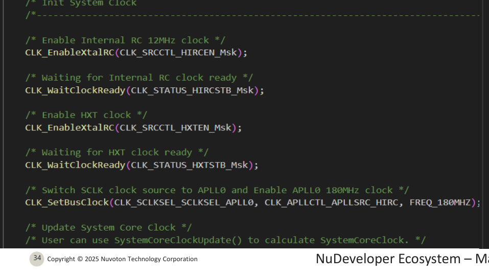
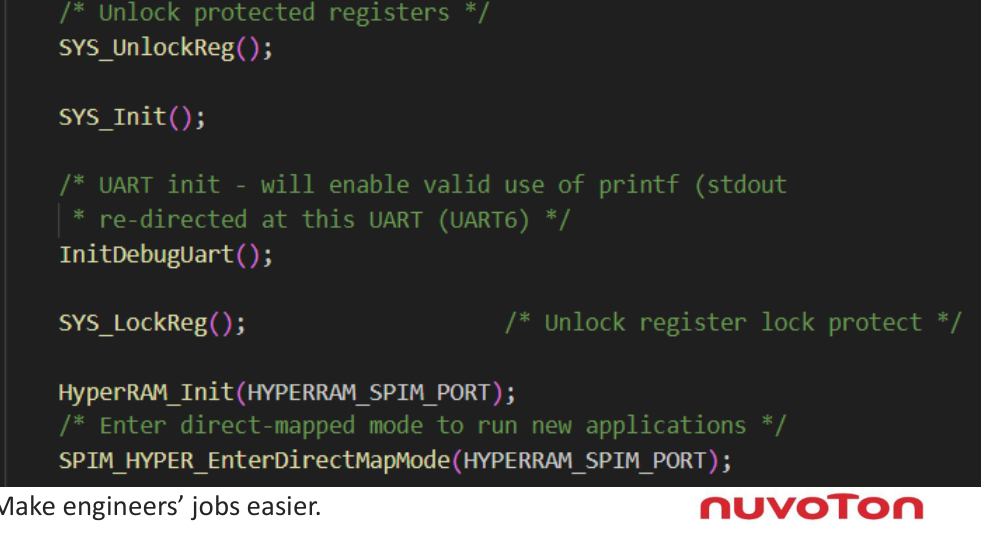
- 프레임 버퍼는 버퍼 상태에 따라 조건에 맞는 버퍼를 찾는 구조입니다.
- get_empty_framebuf()는 새로운 영상 데이터를 저장하기 위한 빈 버퍼를 확보할 때 사용합니다.
- get_full_framebuf()는 데이터가 채워진 버퍼를 가져와 추론 입력으로 넘깁니다.
- 사람 검출 네트워크를 실행한 뒤 결과를 후속 단계로 넘깁니다.
- PresentInferenceResult 함수는 검출된 각 객체의 클래스와 영상 내 위치를 중간 결과로 정리합니다.
PresentInferenceResult는 사람 검출의 중간 결과를 정리하는 함수입니다. 각 검출 객체에 대해 클래스 정보와 영상 내 위치를 묶어 후속 후처리 단계가 사용할 수 있는 형태로 넘깁니다.
즉 추론 네트워크의 출력 텐서를 바로 표시 단계로 보내는 것이 아니라, 이 단계에서 객체별 정보가 한 번 정리됩니다.

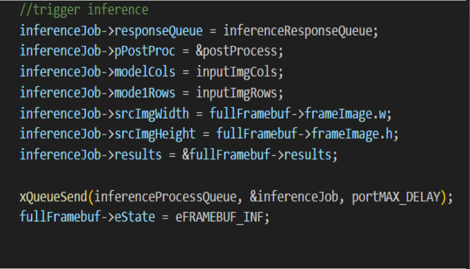
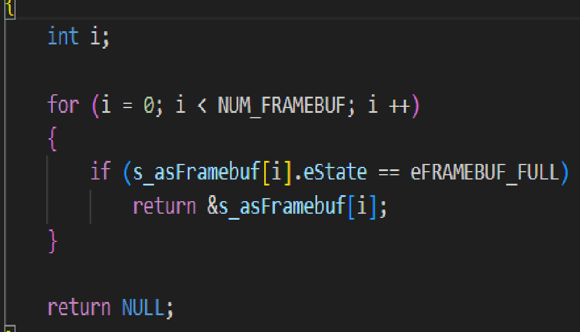
- 네트워크 출력 박스를 원본 영상 크기로 다시 스케일링합니다.
- 출력 텐서에서 경계 상자와 클래스 확률을 추출합니다.
- NMS를 적용해 겹치는 박스를 제거합니다.
- 최종 결과를 resultsOut 벡터에 저장합니다.
- DrawImageDetectionBoxes로 검출 박스와 라벨을 프레임에 그립니다.
- InsertTopNDetection은 새로운 검출 결과를 Top-N 리스트에 삽입하고 objectness 점수 기준으로 정렬합니다.
- 파라미터는 std::forward_list<image::Detection>& detection과 image::Detection& det입니다.
- DetectorPostprocessing은 YOLO 계열 추론 후처리 로직을 수행하며 특징 맵에서 검출 박스를 추출하고 objectness 기준으로 Top-N 결과를 남깁니다.
| 필드 | 설명 |
|---|---|
| m_normalizedVal | 해당 박스가 특정 클래스에 속할 확률, 즉 신뢰도 |
| m_x0, m_y0 | 검출 박스의 좌상단 좌표 |
| m_w, m_h | 박스의 너비와 높이 |
| m_cls | 검출 결과의 클래스 라벨 |
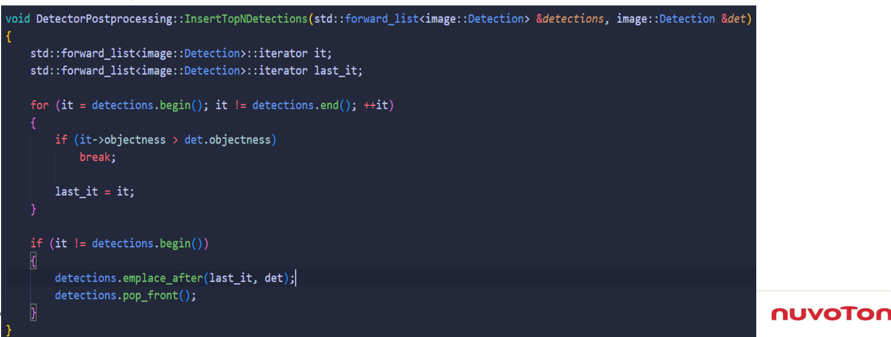
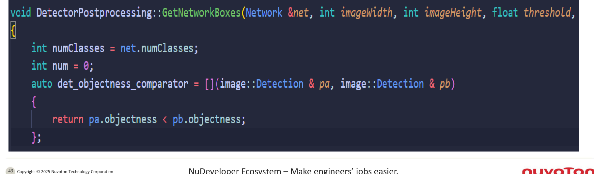
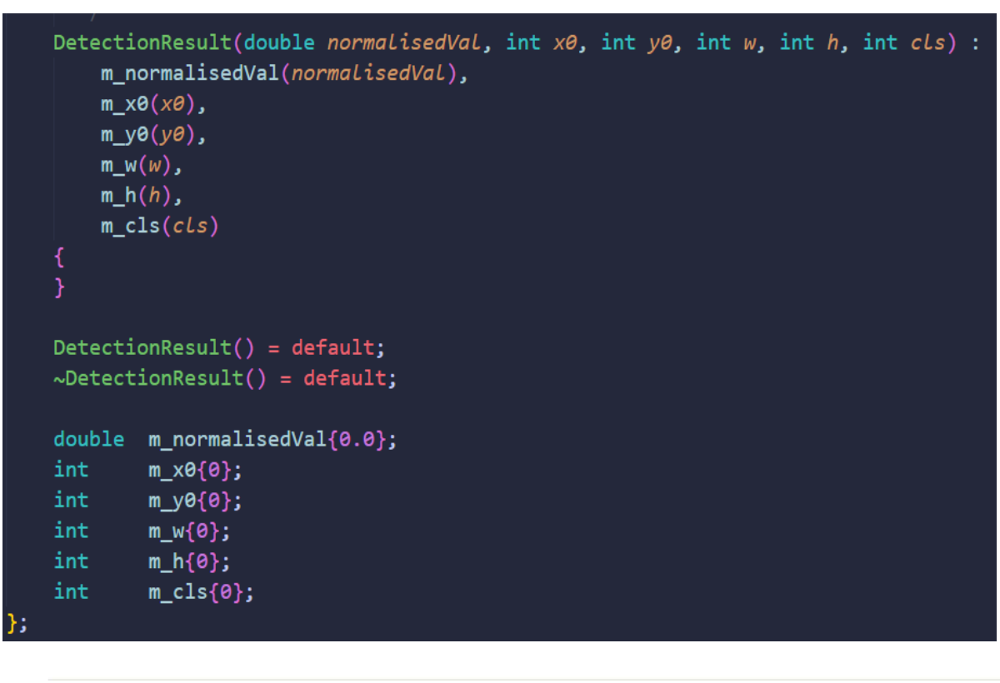
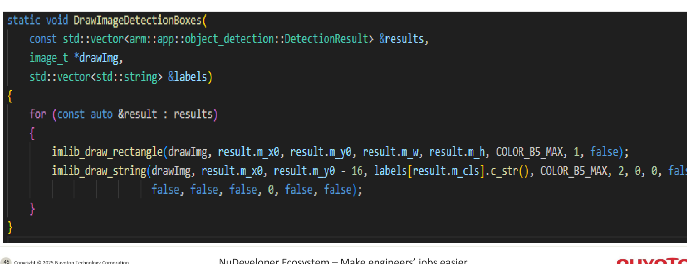
후처리와 그리기가 끝난 프레임은 LCD에 표시됩니다. 아래 이미지는 최종 검출 박스와 라벨이 화면에 어떻게 나타나는지 보여줍니다.
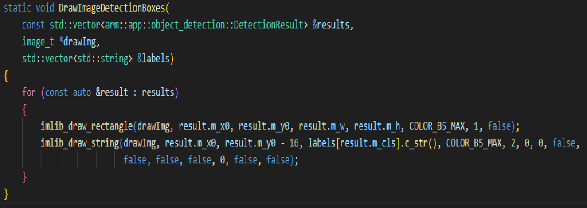
마지막 페이지는 DEMO 영상 섹션이며, 표기 자체는 단순히 링크입니다.
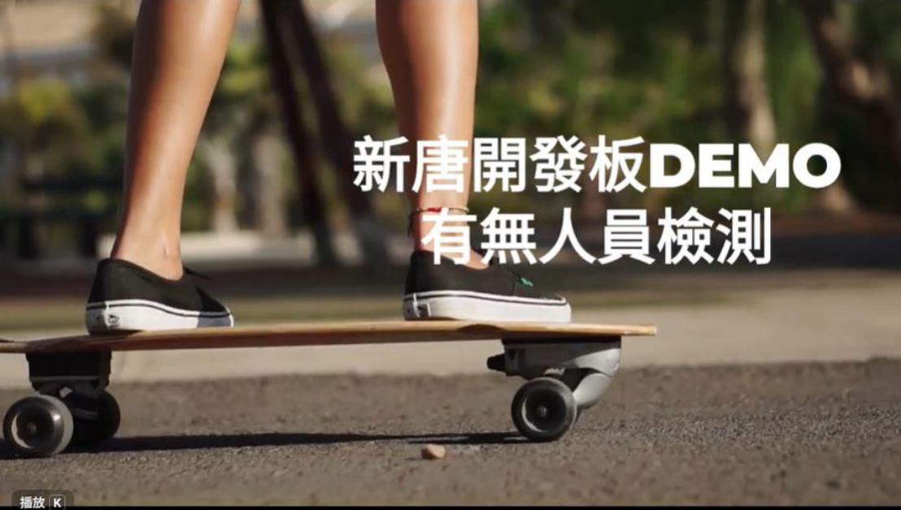